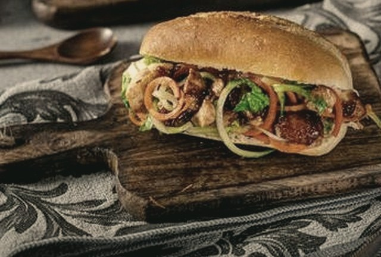

FICHA · VERSIÓN WICHO

←
AsiáticoTHE TERIYAKIEL SABOR QUE LE FALTABA AL MENU.
DULCE, CON MANI Y UN FILO SALADO.
DULCE, CON MANI Y UN FILO SALADO.
Lo que lleva
 Pollo teriyaki
Pollo teriyaki85 G
Queso edam2 LONJAS
Satay maníSALSA
De la casaSALSA
15 CMS/21.90
30 CMS/28.90
¿LO QUIERES A TU MANERA? ARMA UNO PARECIDO →
Lo quiero
S/21.90